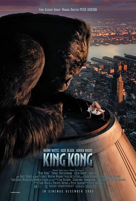

金刚 / King Kong
又名：King Kong: The Eighth Wonder of the World
背景设定很有趣，不过不知道为什么Kong被设定成这样 =。= 那么问题来了，它挂了后面几集是怎么拍的，好奇
作品信息
| 导演 | 彼得·杰克逊 |
| 编剧 | 弗兰·威尔士 / 菲利帕·鲍恩斯 / 彼得·杰克逊 / 梅里安·C·库珀 / 埃德加·华莱士 |
| 主演 | 安迪·瑟金斯 / 娜奥米·沃茨 / 杰克·布莱克 / 阿德里安·布罗迪 / 托马斯·克莱舒曼 / 科林·汉克斯 / 伊万·帕克 / 杰米·贝尔 / 洛博·陈 / 约翰·萨莫尔 / 克里格·霍尔 / 凯尔·钱德勒 / 威廉·约翰逊 / 马克·哈德洛 / 杰拉丁·博若飞 / 大卫·皮图 |
| 类型 | 动作 / 奇幻 / 冒险 |
| 制片国家/地区 | 新西兰 / 美国 / 德国 |
| 语言 | 英语 |
| 上映日期 | 2006-01-12(中国大陆) / 2005-12-05(纽约首映) / 2005-12-14(美国) |
| 片长 | 187分钟 / 201分钟(加长版) |
| IMDb | tt0360717 |
说过什么
2021-03-28 18:48:11
广播 · 看过 · ★★★★☆
背景设定很有趣，不过不知道为什么Kong被设定成这样 =。= 那么问题来了，它挂了后面几集是怎么拍的，好奇
最后一次看到是 2026-08-01T11:05:23+10:00 · 豆瓣原页